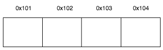
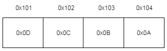
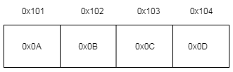

Consider four byte number: 0x0A0B0C0D (Decimal: 168496141). LSB = 0x0D and MSB =
0x0A. And following memory layout

Little-Endian: In LE, LSB is in lowest memory and MSB in highest memory address. So, the number is stored as: 0x0D0C0B0A in memory.
Example architectures: Intel X86
Number: 0X0A0B0C0D. LSB = 0x0D and MSB = 0x0A

int i = 0x0A0B0C0D;
char *c = (char *) &i;
printf ("0x%xn", *c);
// Output is 0xD = little-endian.
Big-Endian (aka Network Byte Order): In BE, MSB is in lowest memory address and LSB in highest. It looks the way numbers are written down on paper. So, the number is stored as: 0x0A0B0C0D in memory.
Example architectures: Motorola 68k, Data transfer on networks use NBO.
Number: 0x0A0B0C0D. LSB = 0x0A and MSB = 0x0D

int i = 0x0A0B0C0D;
char *c = (char *) &i;
printf ("0x%xn", *c);
// Output is 0xa = big-endian.
Host-Byte Order: Ordering on the host machine. If processor is x86, its little-endian, if its Motorola’s 68k, its big-endian.
Mixed-Endian (or Middle-Endian): Ordering of bytes within 16-bit word may differ from ordering of 16-bit words within 32-bit word.
Bi-Endian: Architectures allowing switchable endianness in data segment, code segment or both. ‘Bi-Endian’ refers how processor accesses data. Instruction access (fetching instruction words) is usually fixed endian. Intel’s Itanium CPU allows bi-endian data and instruction access. Ex: ARM version 3 and above, PowerPC,
References: